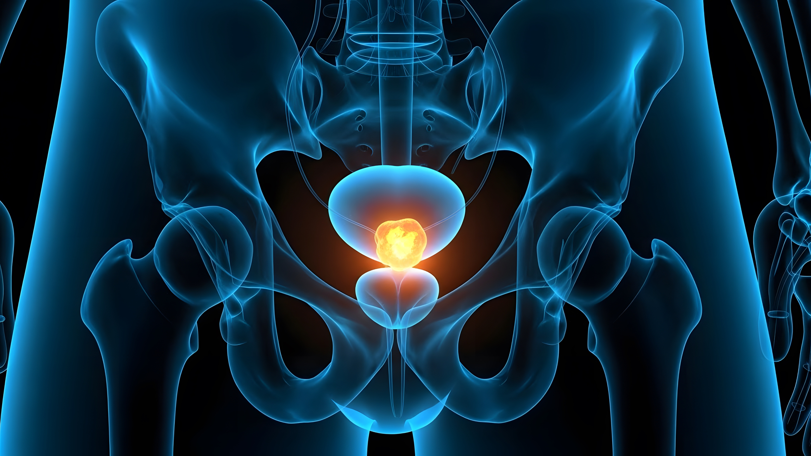
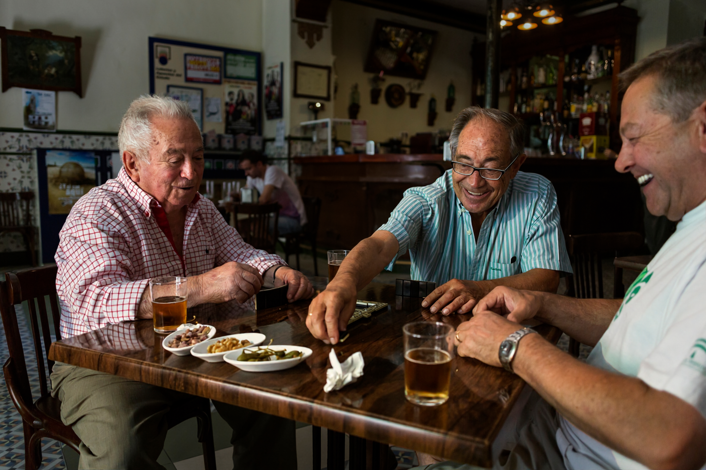

CID C61
Câncer de próstata
Entenda os sinais, o diagnóstico e o tratamento do câncer de próstata.

O que é o câncer de próstata?
O câncer de próstata é um tipo de câncer que afeta a próstata, uma pequena glândula localizada abaixo da bexiga e ao redor da uretra — canal que liga a bexiga ao orifício externo do pênis.1
A doença se desenvolve quando células anormais da próstata crescem de forma descontrolada e formam um tumor. Depois do câncer de pele, é o câncer mais frequente entre os homens.1,2
A próstata não é responsável pela ereção nem pelo orgasmo. Sua função é produzir um líquido que compõe parte do sêmen e ajuda a nutrir e proteger os espermatozoides.1
Quais são os sintomas do câncer de próstata?
Muitos homens não apresentam sintomas no início da doença.
Quando surgem, as manifestações mais comuns podem incluir:2,3
- dificuldade para urinar;
- demora para começar ou terminar de urinar;
- sangue na urina ou no sêmen;
- diminuição do jato de urina;
- necessidade de urinar mais vezes durante o dia ou à noite;
- dor na parte inferior das costas ou na pelve;
- disfunção erétil.
Esses sintomas também podem ser provocados por doenças benignas da próstata, como hiperplasia e prostatite.
A hiperplasia é o aumento benigno da próstata que ocorre naturalmente com o avanço da idade. Já a prostatite é uma inflamação da próstata, geralmente causada por bactérias.3
Na presença de sintomas, é importante consultar um médico urologista para realizar os exames necessários e confirmar ou descartar a suspeita de câncer de próstata.1
Quais são os fatores de risco?
A causa exata do câncer de próstata é desconhecida, mas alguns fatores podem aumentar o risco de desenvolver a doença.2,3
Idade
O risco aumenta com o avanço da idade. No Brasil, a cada dez homens diagnosticados com câncer de próstata, nove têm mais de 55 anos.3
Histórico familiar
Homens cujo pai ou irmão tiveram câncer de próstata antes dos 60 anos apresentam maior risco de desenvolver a doença.3
Sobrepeso e obesidade
Estudos recentes apontam maior risco de câncer de próstata entre homens com peso corporal elevado.3
Quais são os tipos de câncer de próstata?
O ADENOCARCINOMA é o tipo mais comum e representa mais de 95% dos casos. Ele se desenvolve nas células da glândula responsáveis pela produção do fluido da próstata.2,4
Os CARCINOMAS DE PEQUENAS CÉLULAS, SARCOMAS, CARCINOMAS DE CÉLULAS TRANSICIONAIS — também chamados de uroteliais — e CARCINOMAS DUCTAIS representam os outros 5%. São tipos raros, agressivos e, muitas vezes, difíceis de tratar.2,4
O que é câncer de próstata avançado?
O câncer de próstata avançado é aquele que se espalhou, por meio de metástases, para outros órgãos do corpo, como ossos e gânglios linfáticos.5 Um dos tratamentos utilizados é a terapia de privação de andrógenos, também chamada de terapia hormonal ou terapia de supressão de andrógenos.6
Essa terapia busca reduzir os níveis dos hormônios masculinos, como a testosterona, dos quais as células cancerígenas da próstata dependem para crescer. A redução desses hormônios pode retardar ou interromper o crescimento das células cancerígenas.6–8
Entretanto, pode ocorrer o desenvolvimento de resistência à terapia, levando ao surgimento do câncer de próstata resistente à castração, conhecido pela sigla CRPC.7,8
Estima-se que aproximadamente 10% a 20% dos pacientes desenvolvam CRPC dentro de cinco anos após o diagnóstico.
Mais de 80% desses casos já são metastáticos no momento do diagnóstico de CRPC, recebendo o nome de câncer de próstata resistente à castração metastático ou mCRPC.5
Câncer de próstata no Brasil

segundo tipo de câncer mais comum entre os homens brasileiros,
atrás apenas do câncer de pele não melanoma.9
~71.730 novos casos por ano no Brasil (2023 a 2025),
correspondendo a um risco estimado de 67,86 casos a cada 100 mil homens. Em 2020, foram registrados 15.841 óbitos relacionados à doença.9
Como é feito o diagnóstico?
O diagnóstico precoce pode aumentar as chances de sucesso do tratamento.3
Entre os exames utilizados na investigação do câncer de próstata estão:
O PSA é um exame de sangue que mede a quantidade do Antígeno Prostático Específico, uma proteína produzida pelas células da próstata.
Níveis elevados podem indicar a presença de câncer, mas também podem ocorrer devido a outras condições, como inflamação ou aumento benigno da próstata.3,10
O exame é utilizado principalmente para rastrear o câncer de próstata em homens sem sintomas e também está entre os primeiros exames realizados em pessoas que apresentam manifestações que podem estar relacionadas à doença.3,10
É um exame físico utilizado para avaliar o tamanho, o formato e a textura da próstata. Para realizá-lo, o médico introduz no reto do paciente um dedo protegido por uma luva lubrificada.3
A biópsia pode ser indicada quando é identificada alguma alteração no PSA ou no toque retal.
Durante o procedimento, uma pequena amostra da próstata é retirada e analisada em laboratório para verificar a presença de células cancerígenas.10,11
Em algumas situações, o médico pode recomendar a ressonância magnética para obter imagens mais detalhadas da próstata. O exame pode auxiliar na detecção do câncer e na determinação do estágio da doença.11
O PET-CT é um exame de imagem que combina a Tomografia por Emissão de Pósitrons (PET) com a Tomografia Computadorizada (CT).
Por meio de substâncias que liberam radiação, o equipamento realiza imagens do corpo inteiro, ajudando a detectar tumores e a reunir informações importantes para o planejamento do tratamento.12
Como é definido o tratamento?
O tratamento deve ser individualizado e conduzido por um médico especializado. A decisão considera os riscos, os benefícios e os possíveis resultados de cada opção, além de fatores como:1,13
- preferências pessoais;
- estágio da doença;
- idade;
- estado geral de saúde.
Após a confirmação do diagnóstico, médico e paciente devem conversar para definir juntos a melhor estratégia terapêutica.1
Quais são os tratamentos do câncer de próstata?
As opções dependem do estágio da doença e das características de cada paciente.
Pode ser recomendada para tumores de crescimento lento. O câncer é acompanhado por meio de consultas e exames regulares, como PSA, toque retal e biópsias.
Caso o crescimento do tumor se acelere, médico e paciente discutem o início de um tratamento.13
É uma das opções mais utilizadas para o câncer localizado, restrito à próstata.
A cirurgia mais comum é a prostatectomia radical, que envolve a remoção de toda a próstata. Pode ser realizada por diferentes técnicas, incluindo cirurgia aberta, videolaparoscópica ou robótica.13
Também é uma opção comum para o câncer localizado.
Pode ser realizada por uma fonte externa ou por braquiterapia, técnica na qual pequenas sementes radioativas são colocadas diretamente na próstata.13
A terapia hormonal, também chamada de hormonioterapia ou terapia de privação de andrógenos, busca bloquear ou reduzir a produção dos hormônios masculinos que estimulam o crescimento das células cancerígenas da próstata.13
Pode ser utilizada no câncer avançado, quando a doença se espalhou e deixou de responder à terapia hormonal.
A quimioterapia pode reduzir o ritmo de crescimento do tumor e aliviar a dor, mas não cura o câncer avançado.13
Também chamada de terapia direcionada, utiliza medicamentos que atacam características das células cancerígenas que são diferentes das células normais.
Como esses medicamentos circulam pela corrente sanguínea, podem alcançar diferentes áreas do organismo e ser úteis contra alguns tumores que se espalharam.19
Utiliza medicamentos para estimular o sistema imunológico do paciente a reconhecer e destruir as células cancerígenas. Alguns tipos de imunoterapia podem ser empregados no tratamento do câncer de próstata.19
São substâncias radioativas ligadas a moléculas que reconhecem alvos específicos nas células tumorais. Isso permite entregar radiação diretamente ao tumor, com menor impacto nos tecidos saudáveis.20-22
A terapia radioligante pode ser indicada em determinados cenários da doença metastática, de acordo com as evidências clínicas e as diretrizes utilizadas pela equipe responsável.20-22
O que é o estadiamento?
O estadiamento ajuda a determinar a localização e a extensão do câncer. No câncer de próstata localizado, também podem ser definidos grupos de risco de acordo com a probabilidade de progressão ou surgimento de metástases.14
Os critérios utilizados para orientar as decisões iniciais do tratamento incluem:14,15
- nível de PSA no momento do diagnóstico;
- pontuação de Gleason, definida com base na biópsia;
- classificação TNM.
É um sistema que classifica o câncer de próstata de acordo com a aparência das células cancerígenas em comparação com as células normais da próstata. Essa avaliação é realizada a partir do resultado da biópsia.16,17
A classificação TNM corresponde ao sistema tumor-nódulo-metástase:18
T – Tumor: tamanho e extensão do tumor principal;
N – Nódulos/linfonodos: envolvimento dos gânglios linfáticos próximos;
M – Metástase: presença de disseminação para outras partes do corpo.
Por que o cuidado multidisciplinar é importante?
O tratamento do câncer de próstata pode envolver diferentes profissionais de saúde. Em uma abordagem multidisciplinar, esses profissionais trabalham em conjunto para realizar o diagnóstico e elaborar um plano personalizado para cada paciente.27,28
Quais profissionais podem participar do cuidado?
- urologistas;30,31
- oncologistas;31
- radioterapeutas;32
- médico nuclear;33
- profissionais de enfermagem;30
- assistentes sociais;32
- nutricionistas;32
- terapeutas ocupacionais;30
- psicólogos;30,32
- psiquiatras.30,32
As equipes multidisciplinares podem melhorar a comunicação, a tomada de decisões e a coordenação do cuidado.28
Os profissionais discutem regularmente o acompanhamento do paciente para que cirurgia, radioterapia, quimioterapia e cuidados de suporte sejam realizados de acordo com suas necessidades.29
Como lidar com o diagnóstico?
Ao receber o diagnóstico de câncer de próstata, o paciente pode vivenciar sentimentos como medo, raiva, ansiedade e depressão. Cada pessoa encontra sua própria forma e seu próprio tempo para lidar com essa experiência.11
Algumas ações podem ajudar:
É importante reservar tempo para compreender os sentimentos provocados pelo diagnóstico e buscar apoio da família, dos amigos ou de um terapeuta.11,34
Conhecer o estágio e o grau do câncer pode ajudar o paciente a se sentir mais seguro para participar das decisões sobre o tratamento. As consultas médicas são oportunidades para esclarecer dúvidas sobre a doença, o diagnóstico e as opções terapêuticas.11,34
Grupos de apoio, organizações comunitárias e o contato com sobreviventes do câncer de próstata podem oferecer acolhimento e troca de experiências.11
Durante o tratamento, é importante praticar o autocuidado, manter uma alimentação saudável, praticar atividades físicas regularmente, dormir bem e controlar o estresse.11,34
Um dos desafios relacionados ao câncer de próstata é a resistência de alguns homens em procurar orientação médica. O estigma relacionado à saúde masculina e a falta de informação podem contribuir para o adiamento ou para a não realização dos exames necessários.9
Campanhas como o Novembro Azul buscam ampliar a conscientização, incentivar o diálogo sobre saúde e reduzir o estigma associado ao câncer de próstata.
As mulheres também podem desempenhar um papel importante na disseminação de informações e no incentivo para que familiares e amigos procurem orientação médica.
Qualidade de vida durante o tratamento
A jornada do paciente vai além do tratamento da doença, especialmente no cenário metastático.
Dor crônica, fadiga, efeitos colaterais e mudanças na rotina podem afetar o bem-estar físico e emocional.
Por isso, além das terapias contra o câncer, é importante oferecer suporte para o manejo desses desafios.35
A comunicação aberta entre o paciente e a equipe de saúde permite discutir preocupações, sintomas e efeitos colaterais.
A integração dos cuidados físicos, emocionais e sociais contribui para uma abordagem centrada no paciente e para uma participação mais ativa nas decisões sobre o tratamento.28,29,35
Artigos relacionados
Metástase: Ocorre quando células cancerígenas se desprendem do tumor principal, entram na circulação sanguínea ou linfática e se instalam em outras partes do corpo, formando novos tumores.36; Remissão: Significa que os sinais e sintomas do câncer estão reduzidos ou ausentes. A remissão pode ser parcial ou completa.37; Taxa de sobrevida: É uma medida utilizada para discutir o prognóstico. A taxa de sobrevida em cinco anos corresponde à porcentagem de pacientes que vivem pelo menos cinco anos após o diagnóstico. Essa medida não prevê quanto tempo uma pessoa viverá, mas ajuda a compreender a probabilidade de sucesso do tratamento.38; Sobrevida global: É o período durante o qual o paciente permanece vivo após o diagnóstico ou o início de um tratamento. Nos estudos, indica a porcentagem de pacientes que estão vivos em determinado momento após o diagnóstico ou o início da terapia.39
Referências
1. Ministério da Saúde. Câncer de próstata. Acesso em maio de 2025.
2. American Cancer Society. Prostate Cancer: What Is Prostate Cancer? Acesso em agosto de 2026.
3. Instituto Nacional de Câncer — INCA. Cartilha Câncer de Próstata. Acesso em agosto de 2026.
4. National Cancer Institute — NIH. Prostate Cancer. Acesso em agosto de 2026.
5. Kirby M, Hirst C, Crawford ED. Characterising the castration-resistant prostate cancer population: a systematic review. International Journal of Clinical Practice. 2011;65(11):1180–1192.
6. Mohler JL, Antonarakis ES, Armstrong AJ et al. Prostate Cancer, Version 2.2019, NCCN Clinical Practice Guidelines in Oncology. Journal of the National Comprehensive Cancer Network. 2019;17(5):479–505.
7. Gillessen S, Omlin A, Attard G et al. Management of patients with advanced prostate cancer: recommendations of the St. Gallen Advanced Prostate Cancer Consensus Conference. Annals of Oncology. 2015;26(8):1589–1604.
8. Smith MR. Androgen deprivation therapy for prostate cancer. New England Journal of Medicine. 2012;367(21):2035–2041.
9. Instituto Nacional de Câncer — INCA. Estimativa 2023: incidência de câncer no Brasil. Acesso em agosto de 2026.
10. American Cancer Society. Diagnosis of Prostate Cancer. Acesso em agosto de 2026.
11. Mayo Clinic. Prostate Cancer: Diagnosis and Treatment. Acesso em agosto de 2026.
12. A.C.Camargo Cancer Center. PET-CT. Acesso em agosto de 2026.
13. A.C.Camargo Cancer Center. Tratamento do câncer de próstata. Acesso em agosto de 2026.
14. D'Amico AV, Whittington R, Malkowicz SB et al. Biochemical outcome after radical prostatectomy, external beam radiation therapy, or interstitial radiation therapy for clinically localized prostate cancer. JAMA. 1998;280(11):969–974.
15. National Comprehensive Cancer Network. NCCN Clinical Practice Guidelines in Oncology: Prostate Cancer, versão 2.2021. Acesso em agosto de 2026.
16. Cancer.Net. Prostate Cancer: Stages and Grades. Acesso em agosto de 2026.
17. Paner GP, Gandhi J, Choy B, Amin MB. Essential Updates in Grading, Morphotyping, Reporting, and Staging of Prostate Carcinoma for General Surgical Pathologists. Archives of Pathology & Laboratory Medicine. 2019;143(5):550–564.
18. National Cancer Institute. Cancer Staging. Acesso em agosto de 2026.
19. American Cancer Society. What's New in Prostate Cancer Research? Acesso em agosto de 2026.
20. Sartor O, de Bono J, Chi KN et al. Lutetium-177–PSMA-617 for Metastatic Castration-Resistant Prostate Cancer. New England Journal of Medicine. 2021;385(12):1091–1103.
21. Morris MJ et al. Phase III Study of 177Lu-PSMA-617 in Patients with Metastatic Castration-Resistant Prostate Cancer. The Lancet. 2021;398(10314):1895–1904.
22. Herrmann K, Schwaiger M, Lewis JS et al. Radiotheranostics: A Roadmap for Future Development. The Lancet Oncology. 2020;21(3):e146–e156.
23. American Cancer Society. Precision Medicine. Acesso em agosto de 2026.
24. Cancer.Net. Personalized Cancer Medicine. Acesso em agosto de 2026.
25. Oncoguia. O que são genes? Acesso em agosto de 2026.
26. Subramaniam RM. Precision Medicine and PET/Computed Tomography: Challenges and Implementation. PET Clinics. 2017;12(1):1–5.
27. American Cancer Society. Health Professionals Associated with Cancer Care. Acesso em agosto de 2026.
28. NSW Government. Multidisciplinary Cancer Care Team. Acesso em agosto de 2026.
29. Berardi R, Morgese F, Rinaldi S et al. Benefits and Limitations of a Multidisciplinary Approach in Cancer Patient Management. Cancer Management and Research. 2020;12:9363–9374.
30. Cancer Council NSW. Health Professionals — Prostate Cancer. Acesso em agosto de 2026.
31. American Cancer Society. Treating Prostate Cancer. Acesso em agosto de 2026.
32. Oncoguia. Conte com uma equipe multiprofissional. Acesso em agosto de 2026.
33. A.C.Camargo Cancer Center. Teranóstica: a medicina nuclear no tratamento do câncer. Acesso em agosto de 2026.
34. American Cancer Society. Living as a Prostate Cancer Survivor. Acesso em agosto de 2026.
35. Taylor JM, Chen VE, Miller RC, Greenberger BA. The Impact of Prostate Cancer Treatment on Quality of Life: A Narrative Review. Research and Reports in Urology. 2020;12:533–546.
36. Ministério da Saúde. Metástase. Acesso em agosto de 2026.
37. A.C.Camargo Cancer Center. Recidiva, seguimento, cura e remissão em oncologia. Acesso em agosto de 2026.
38. Oncoguia. Taxa de sobrevida para o câncer de próstata. Acesso em agosto de 2026.
39. ABRALE. Taxa de sobrevida global — Glossário de oncologia. Acesso em agosto de 2026.
Material destinado ao público leigo. 2026 © Direitos Reservados Novartis Biociências S/A – Proibida a reprodução total ou parcial não autorizada. Atualizado em 14 de agosto de 2026.
BR-XXXXX